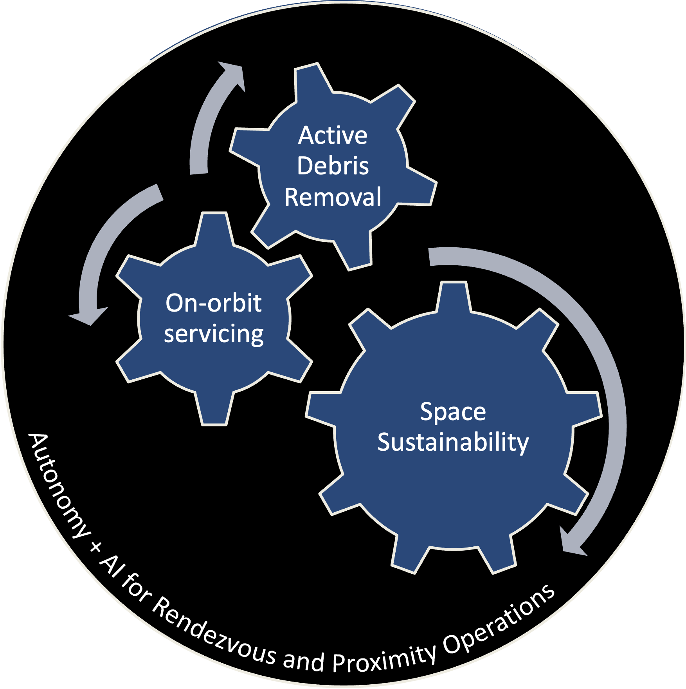

Space Autonomy Lab
Space for good
Developing intelligent, safe, and autonomous systems for space exploration, debris removal, and proximity operations at the University of Illinois Urbana-Champaign.

As of August 2024, an estimated
orbit Earth. These populations are growing. — ESA Space Debris Report
Latest Updates
News
Nov 2026
Meta-RL Paper Accepted to IEEE TAES
Our paper on meta-reinforcement learning for robust, non-greedy control barrier functions in spacecraft proximity operations has been accepted for publication in IEEE Transactions on Aerospace and Electronic Systems.
Publication
2026
GATE Grant Awarded
Minduli received a Grants for Advancement of Teaching in Engineering (GATE) award from The Grainger College of Engineering to build an AI-based self-assessment tool that shows students, before a course starts, whether they are prepared for it.
Award
Aug 2026
Chala Adane Awarded Illinois Distinguished Fellowship
PhD student Chala Adane has been awarded the Illinois Distinguished Fellowship. Congratulations, Chala!
Award